AMI Tutorial¶
This tutorial concerns the creation of an Amazon Machine Image that can spawn individual user instances for an interactive workshop. Unlike the other tutorials described on this website, following this tutorial will incur fees, and keep costing money for as long as the resulting resources are active. This protocol is primarily intended for internal CBC use, though others can implement it too with the aforementioned caveat in mind.
What is an Amazon Machine Image?
An AMI is, for all intents and purposes, a blueprint for constructing a virtual computer according to an administrator’s exact specifications. One AMI can be used to create an arbitrary number of these virtual computers, meaning that once an AMI is created, it can be used to e.g. generate 40 identical Ubuntu machines running R 3.4.3 and Jupyter for use by 40 students in a workshop. AMIs can be either private, shared with specified users, or made public.
AMIs are proprietary and can only be used in conjunction with Amazon Web Services. A paid AWS account is necessary to create and utilize AMIs.
Creating an AMI
AMIs are generally created from an existing image that has been customized in some way. As such, you will begin by launching an existing ‘base’ AMI that consists of little more than an operating system, build upon it, and then turn it into an AMI of your own.
The easiest way to create an AMI is from the console. I use the us-east-2 region, so the links I demonstrate here will all be to services in us-east-2. The other regions have the same services, but some region must be selected in order to proceed, so I will be using us-east-2 throughout for consistency. Noting the region you use is very important because it will inform how certain later steps are performed.
To begin, click on the ‘EC2’ link from the general console; doing so will redirect you to the EC2 dashboard. It will look something like this:
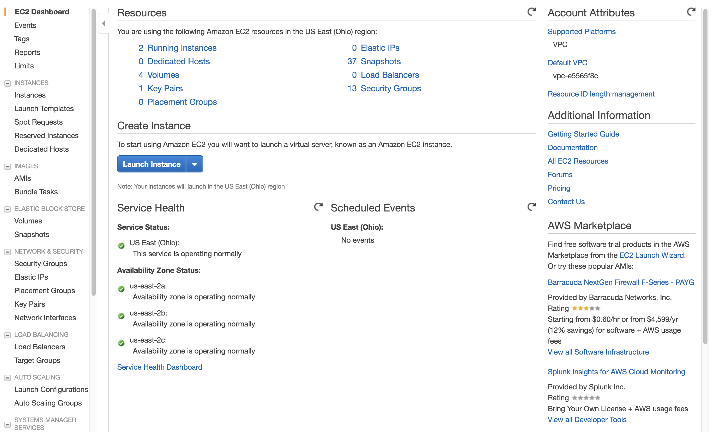From there, click on the ‘Instances’ link on the left, and then on the blue ‘Launch Instance’ button at the top (the main body of the button, not the arrow on its right edge). Doing so will then present you with a screen presenting you with a variety of base AMIs to use; we generally use the “Ubuntu Server 16.04” AMI, and will do so for the remainder of this tutorial:
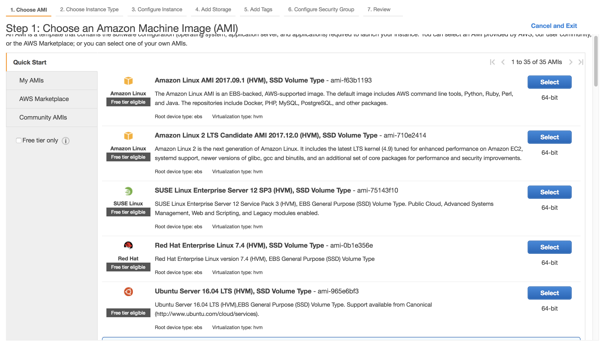Next, you must select the instance type, which will inform what hardware capabilities are made available to the instance. Your AMI will not be locked into the instance type selected here, but as a general rule, it’s a good idea to choose the type you’re likely to end up deploying. To balance cost and performance, we try to stick to the ‘t2.medium’ (2 CPUs, 4 GB of memory) type that is adequate for running examples in a workshop setting.
Click the gray ‘Next: Configure Instance Details’ button, not the blue ‘Review and Launch’ button, as we have more preferences to set:
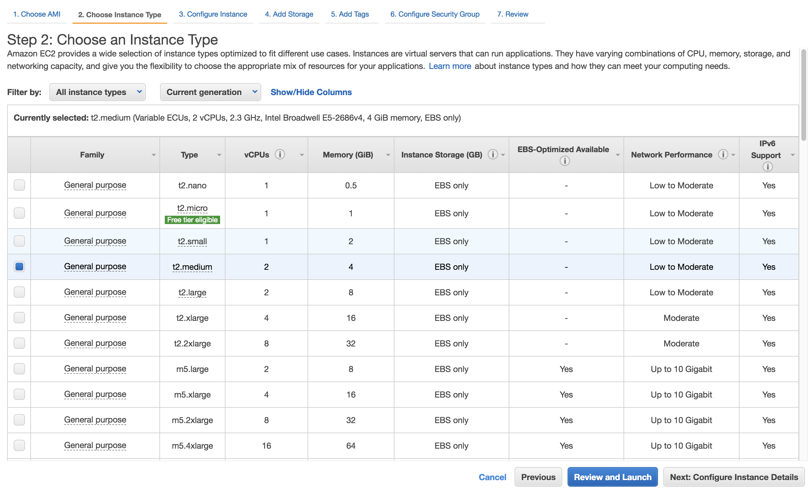Next, you will see a page with a large variety of options. These should remain at their default values for now, but one in particular is important to note for later: the ‘Number of instances’ field. Here, we see that it is trivial to spawn multiple instances at the same time, as we will do later:
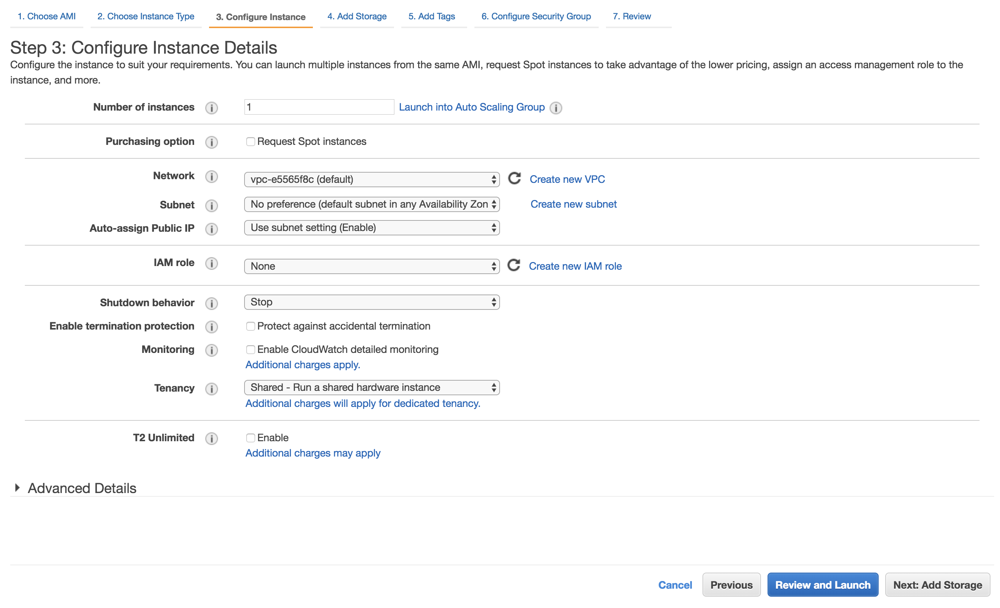Click the gray ‘Next: Add Storage’ button:
Next, you will be required to allocate storage to the instance. Unlike the instance type selected above, the storage allocated at this step will impose constraints on the AMI you create; specifically, whenever you use the AMI to spawn an instance, the spawned instance will be required to have at least as much storage as you specify now. I generally use 50 GB when spawning instances to ensure that any R / Bioconductor packages that come with data can fit; this value will depend entirely on the use case.
Click the gray ‘Next: Add Tags’ button:
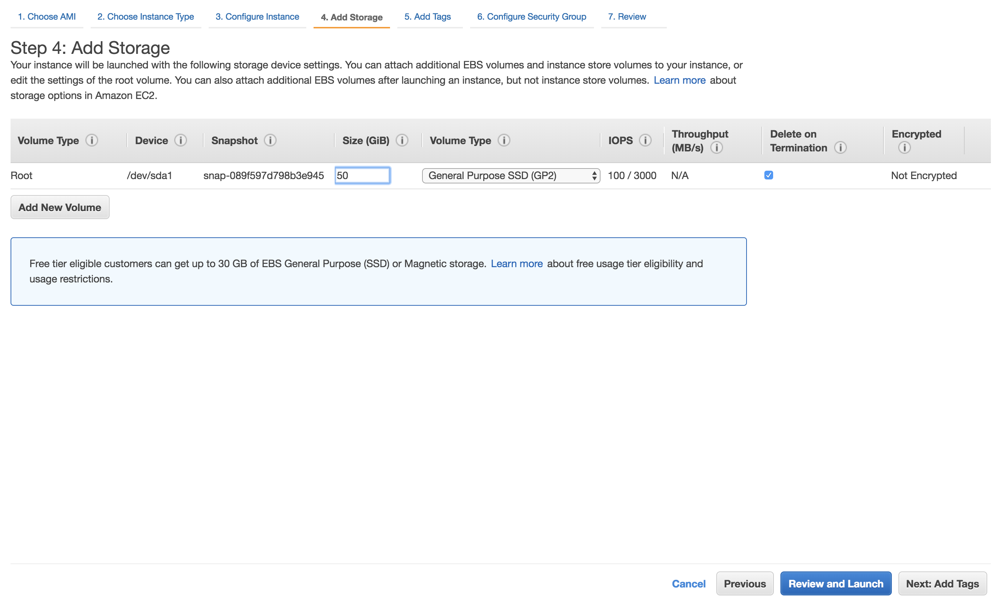We do not need to add tags, so you can click the gray ‘Next: Configure Security Group’ immediately:
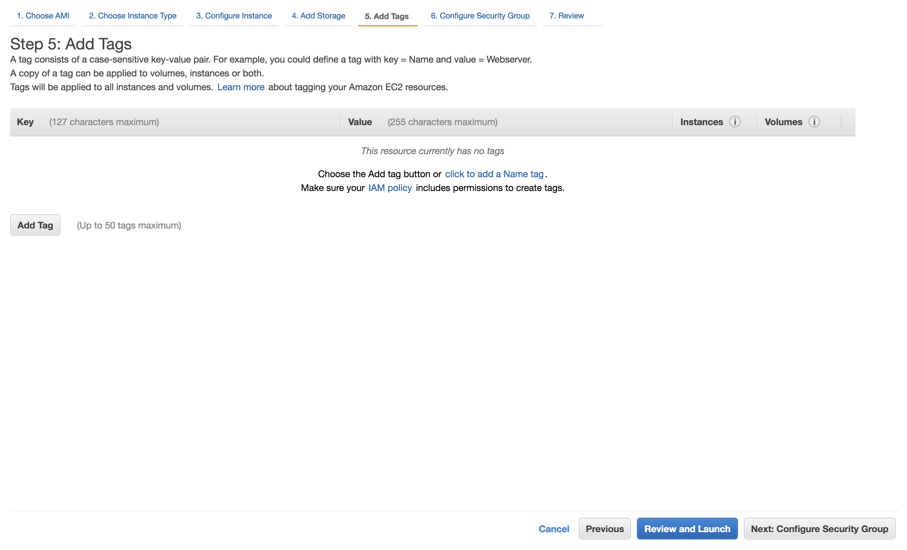Next, it will be necessary to configure the instance’s ‘security group’; this setting controls which ports are open and accessible to outside users i.e. the students in a workshop. You will need to be sure that the correct ports are open as ‘inbound rules’.
For CBC purposes, we configure Jupyter to use port 15500. We have a pre-made security group entitled ‘workshop’ - click ‘Select an existing security group’ and scroll to the bottom of the list to find and select it. Finally, click the blue ‘Review and Launch’ button:
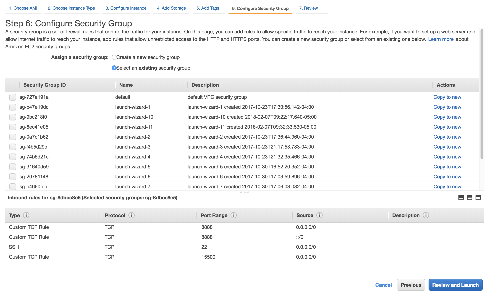 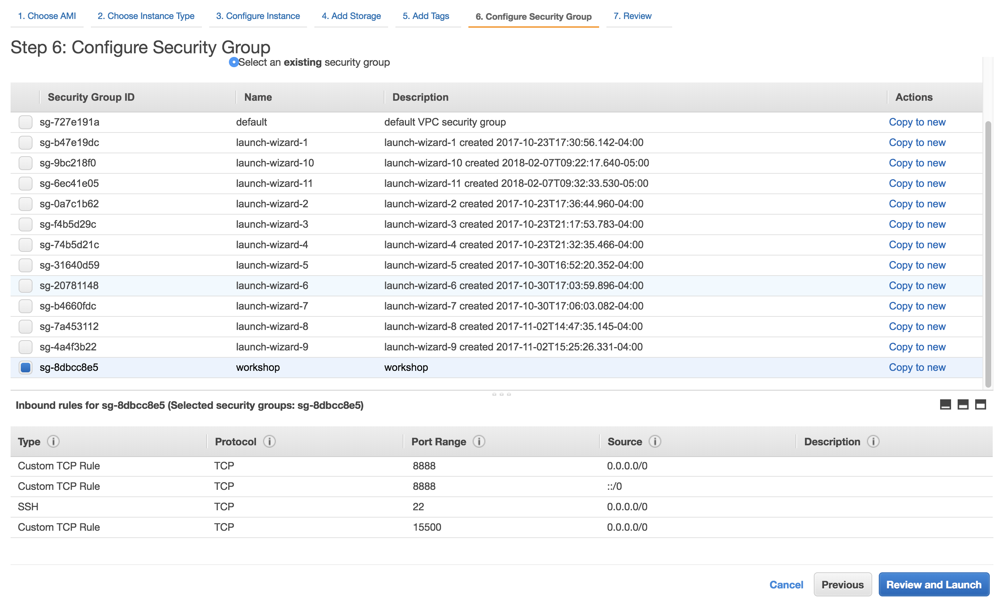Spot-check the settings to be sure you designated everything correctly, and then click ‘Launch’:
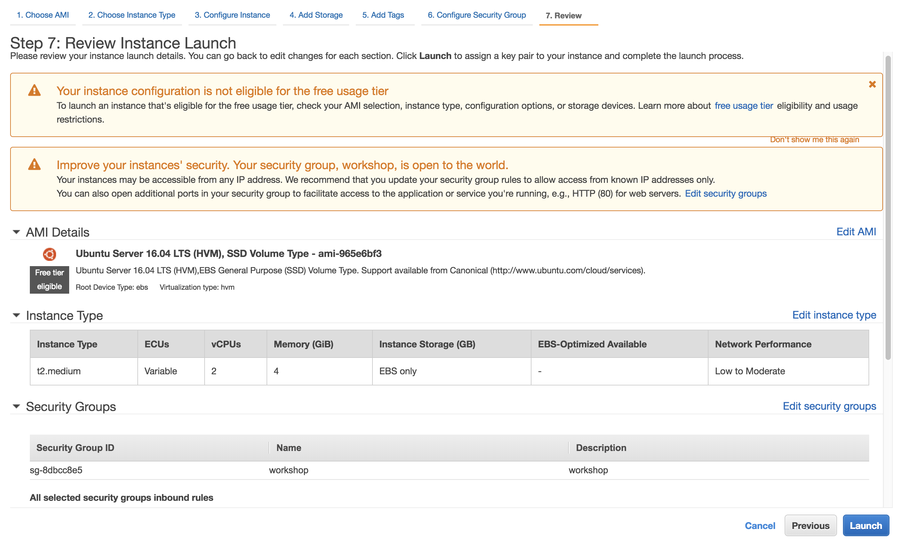You must then designate a keypair to be used to secure the instance. For the CBC workshops, we use a keyfile created by Andrew Leith:
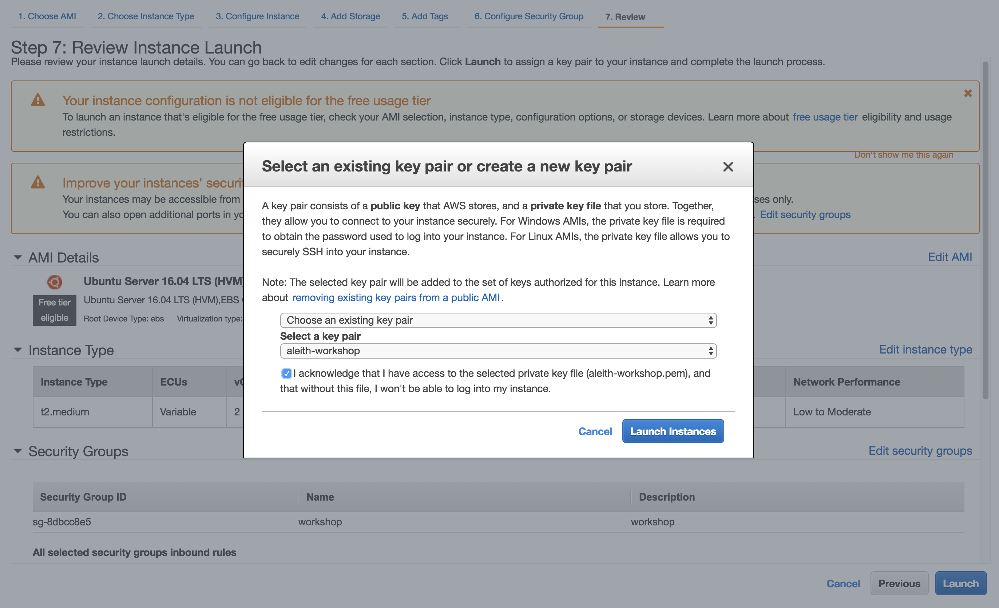The instance will initialize, which takes a few minutes, and then be available for connection. To find its IP, scroll to the right and look for the ‘IPv4 Public IP’ column:
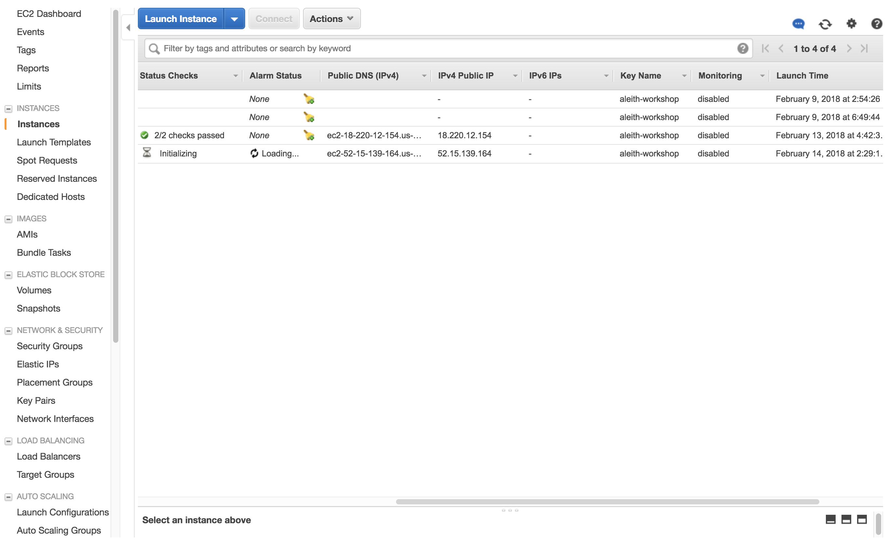To connect to an Amazon instance by ssh, you must use a keyfile. The syntax to connect using a keyfile is as follows:
ssh -oStrictHostKeyChecking=no -i /path/to/keyfile/keyfile.pem ubuntu@instance_ip
This file can be found on Oscar at the path:
/gpfs/data/cbc/keys/
It is generally good practice to put the keyfile into the .ssh hidden directory in your home directory. It is also necessary to ensure that the keyfile has the proper permissions as designated by Amazon:
chmod 400 keyfile.pem
Thus, for a typical CBC adminstrator, the full command will be:
ssh -oStrictHostKeyChecking=no -i ~/.ssh/aleith-workshop.pem ubuntu@instance_ip
With this command executed, you are now logged in as user ‘ubuntu’, who is a sudoer with no password.
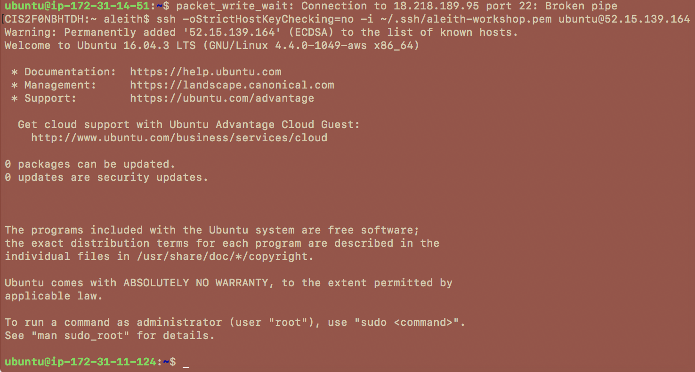Customizing the Instance
From here, the instance can be customized as needed and then turned into an AMI. There are an infinite number of use cases, so the remainder of this document will focus on the specific customization needed to generate an instance with R 3.4.3 and Jupyter for the second Bioconductor workshop; the minor tweaks needed to use other package lists and notebooks should be straightforward.
First, run the following three commands (these are not currently up to date in light of new material):
wget https://s3.us-east-2.amazonaws.com/brown-cbc-amis/configure_ami.sh
wget https://s3.us-east-2.amazonaws.com/brown-cbc-amis/install_all_levi.R
wget https://s3.us-east-2.amazonaws.com/brown-cbc-amis/package_list.txt
The first downloads a script that will transform this blank instance into a fully-realized template for building our AMI. The second is an R script that installs the R and Bioconductor packages needed for the workshop. The third is a list of system packages required to compile the software to be used.
Once these three files are all present on the system, simply type:
bash configure_ami.sh
and everything should take care of itself. This process should take approximately one hour, though depending on the number of R packages it could take longer - all of the installations are verbose so it will be apparent that the process is continuing.
Building the Instance into an AMI
Finally, we will take our completed image and turn it into an AMI so that it can be used to spawn an arbitrary number of copies. To do so, return to the EC2 console and check the box next to your instance. Be sure to select the correct instance, as it is surprisingly easy to get the wrong one if you have multiple active (I strongly recommend sorting by ‘Launch Time’).
Once your instance is selected, click on the gray ‘Actions’ button on the top bar, navigate to the ‘Image’ submenu, and then select ‘Create Image’:
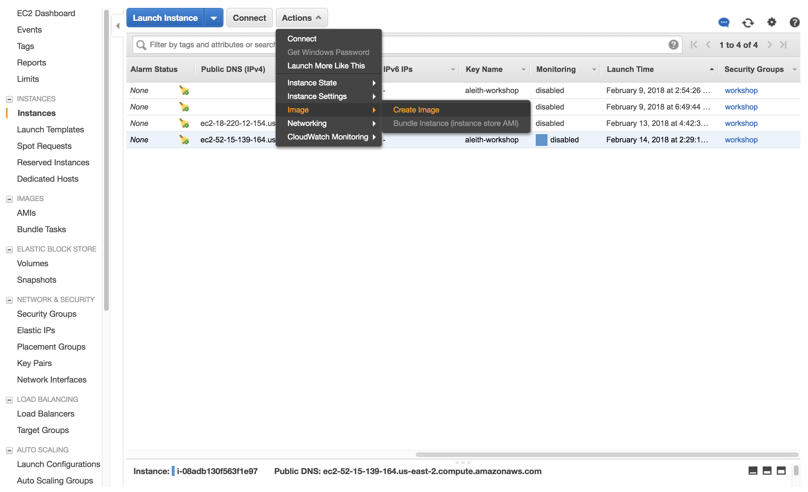The ‘Create Image’ window will pop up and ask you to specify a name for the instance, as well as an optional description. Creating an AMI from an instance will cause that instance to reboot, so you are given the option to bypass this reboot - do not check this box, as it can cause problems with AMI generation. Once you have named the instance, click the blue ‘Create Image’ button, close the window, and then click the ‘AMIs’ button on the left toolbar.
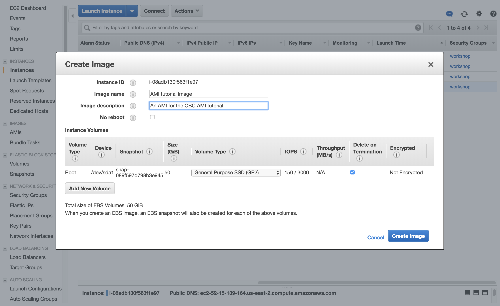Now, you’ll need to wait a while for the AMI to be created. This process usually takes around 10 minutes, and until it’s complete, the AMI will show as ‘pending’ in yellow text. Do not attempt to interact with the AMI while this process is ongoing. Once it is ‘available’ in green, you can proceed to the next step:
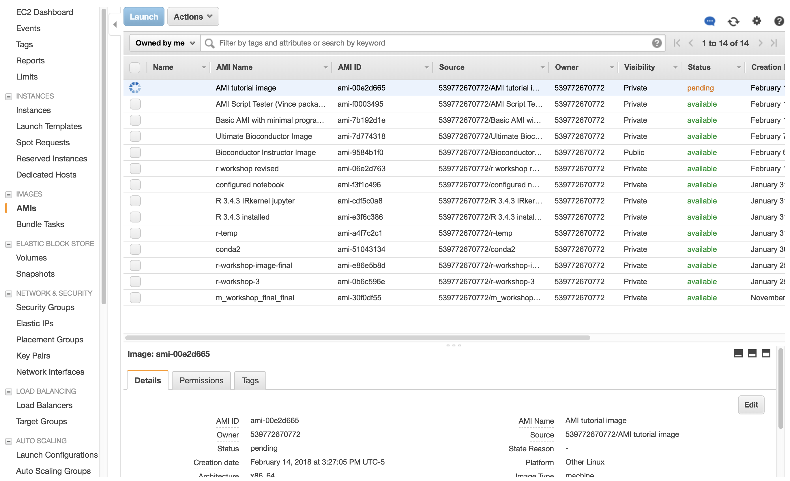Instantiating the AMI
Now, we will instantiate 5 copies of the AMI for the purposes of testing. Select the AMI and then click the blue ‘Launch’ on top. You will now have to repeat the earlier steps for configuring the instances. Everything should be done in the same manner except for the second step, wherein ‘Number of instances’ should be set to 5:
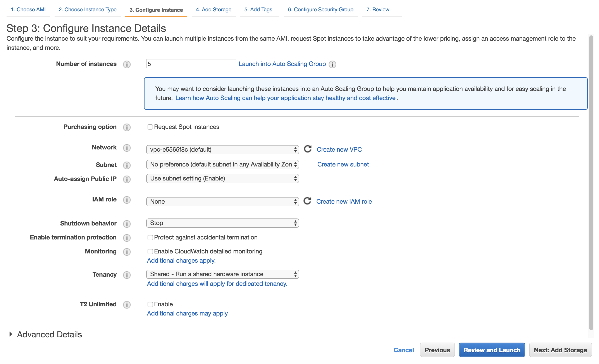Then, go through all the pages and apply the same settings we used above - the AMI will not “remember” things like security groups, so you’ll need to reapply the ‘workshop’ security group to ensure the instances are accessible. Once you’re done, wait for them to instantiate and then proceed.
Retrieving IPs and Activating Jupyter
To allow all users to have their own instances, is is necessary to retrieve the IP addresses of the instances that spawn. Doing so manually would be easy in the case of this toy example; however, in the case of an actual workshop, maually copy-and-pasting 40+ IPs would be very time-consuming and prone to error. Thus, we have a script that we use to retrieve the IPs in an automated fashion.
To use this script, one must first install the AWS command line interface and configure it properly. To configure it, type:
aws configure
and then provide it with your secret and public keys. Furthermore, you must specify your default region to be the same region that contains your instances. The script will retrieve the IPs of all active instances in the user’s default region, so be sure to stop any instances that are not intended for workshop use before running it.
Once the IPs are retrieved, the script will process them so that each is present on its own line in a text file. The script will then iterate over this file line-by-line, log into each IP, and create a detached instance of GNU screen containing an active Jupyter process. These screens will run indefiniely, keeping the Jupyter process alive.
Finally, the script will append ‘:15500’ to each IP, yielding line like ‘52.15.139.164:15500’ that can be directly pasted into a browser to access the Jupyter process running on that machine. Jupyter processes are password-protected and the password is ‘cobre’.
The resulting text file, ‘ips_newline_port.txt’, should be sent to Ashok Ragavendran (or whoever else is mutually agreed-upon) for distribution to the users.
The script can be found at the following link:
https://github.com/compbiocore/workshop-utilities/blob/master/access_ips.sh
and then run using:
bash access_ips.sh
It is prudent to manually spot-check a few of these instances to verify that Jupyter is indeed running correctly. The Jupyter server takes about 60 seconds to actually boot completely up, and before that time passes it will look broken, so please wait for a full minute before attempting to do so or you’ll likely observe a false negative.